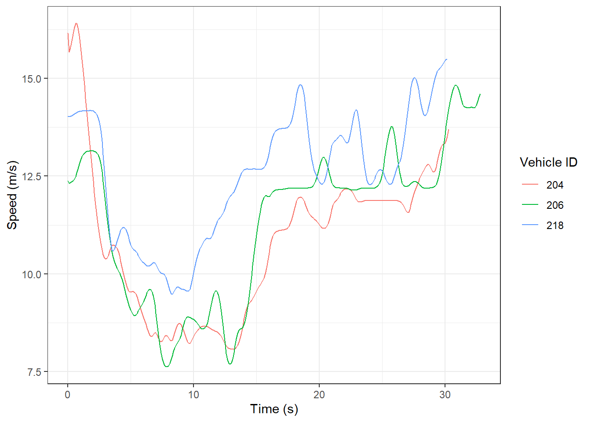
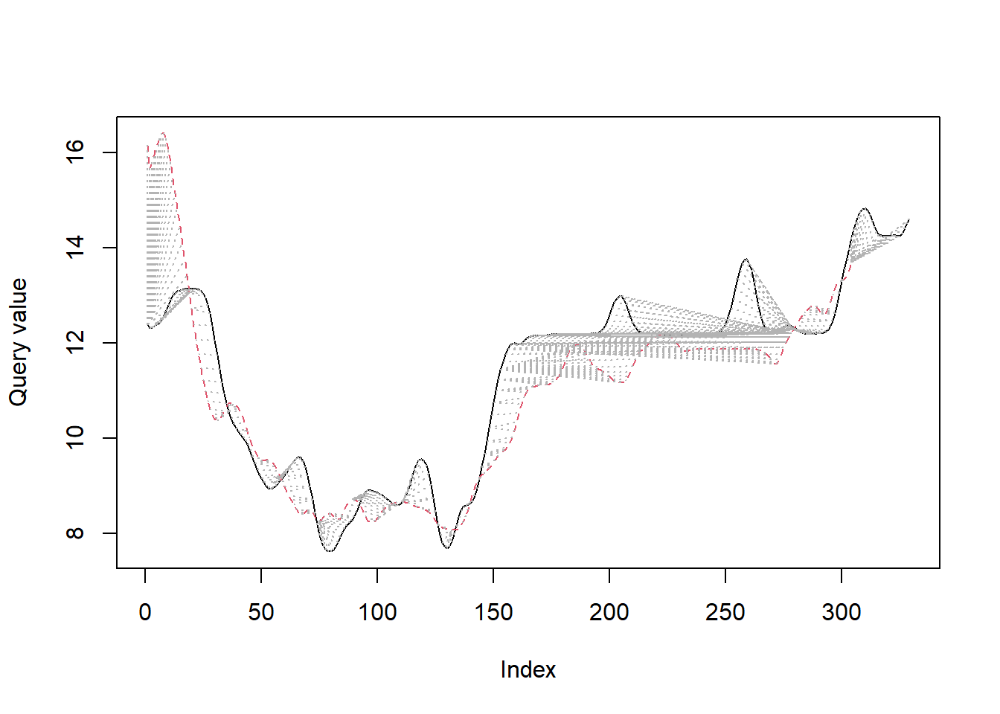
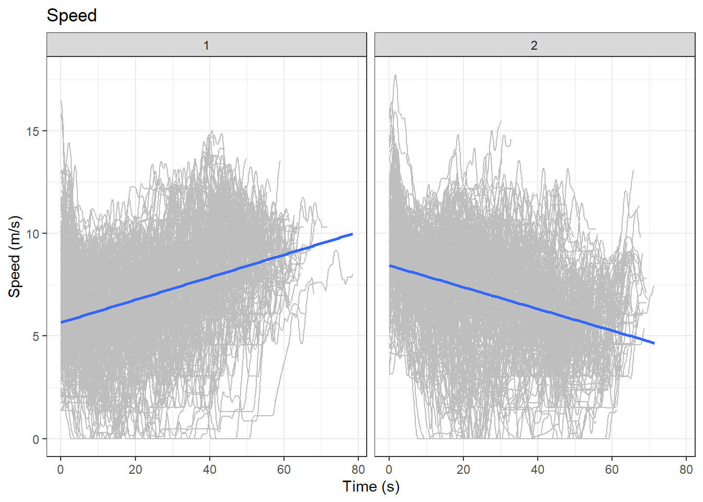
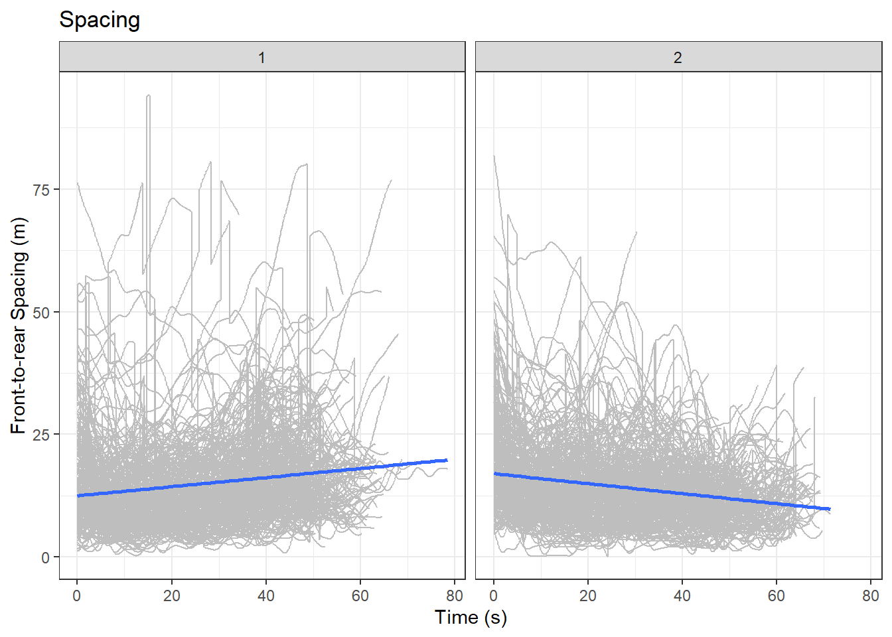

Clustering drivers
Using Dynamic Time Warping (DTW) algorithm to cluster drivers
Introduction
Speed-related and large truck collisions are the top two situations with highest road fatalities in Ontario (Ministry of Transportation Ontario 2020). Many studies have found differences in driving styles - such as following a truck too closely - that may help understand the reasons for collisions (Ossen and Hoogendoorn 2011; Durrani, Lee, and Maoh 2016).
A first step to identify different driving styles is to group together those drivers who have a ‘similar’ driving style. Then the aggregated measures of drivers’ socio-demographic characteristics and driving history may help label a certain style of a group. But how do you define similarity?
Determining Similarity
Defining similarity is a challenge because each driver has multiple data points e.g., speed that varies over time. For example, the following shows the speed profiles (also called as trajectories) of three drivers in lane 1 on Interstate-80 (I-80) in United States (based on the cleaned I80 data from Montanino and Punzo 2015):
suppressPackageStartupMessages(library(tidyverse))
df_2_drivers <- df %>%
filter(Lane == 1,
Vehicle.ID %in% c(204, 206, 218))
ggplot(data = df_2_drivers,
aes(group = Vehicle.ID, x = Time, y = svel)) +
geom_path(aes(color = as.character(Vehicle.ID))) +
labs(x = "Time (s)", y = "Speed (m/s)",
color = "Vehicle ID") 
So, which of the two trajectories above are the most similar? Qualitatively, we may say that speed trajectories of vehicles 204 and 206 seem to be be alike in magnitude and pattern, while vehicle 218 is different. But how do we quantify the similarity?
Dynamic Time Warping
We may estimate the difference between speeds of 2 vehicles at each point in time and sum up all the differences to get an overall similarity measure. But this won’t work when the time-series of speed are unequal in length. This approach also ignores the similar pattern (e.g., increase in speed) after a time lag. Dynamic Time Warping (DTW) algorithm can account for this similarity with/without a time lag, and also compares each value with every other value between the two time-series. Therefore, a DTW score is a measure of dissimilarity between two time-series. The higher the score, more is the dissimilarity. You can learn the basics of DTW with this tutorial.
The following code shows how to determine the DTW score between the speeds of the vehicles 204 and 206:
suppressPackageStartupMessages(library(dtw))
dataa <- df_2_drivers %>%
filter(Vehicle.ID==204) %>%
pull(svel)
query <- df_2_drivers %>%
filter(Vehicle.ID==206) %>%
pull(svel)
alignment <- dtw(query, dataa, keep=TRUE)
plot(alignment, type="twoway")
paste0("DTW score between vehicles 204 and 206: ", alignment$distance)[1] "DTW score between vehicles 204 and 206: 155.26969"Similarly, the DTW score between vehicles 204 and 218 is 240.33987. Since this score is higher than the previous one, it confirms our visual inference that vehicles 204 and 206 have more similar speeds than vehicles 204 and 218.
Clustering Drivers using DTW score as a distance measure
So far we have seen how to compare pairs of vehicles using DTW score as a dissimilarity measure. We now want to use DTW score to compare all pairs of vehicles. Not only that, we want to use multiple variables, i.e., speed, speed-difference and spacing between two vehicles, etc. Since all of these variables change over time, they are considered as multivariate time-series.
Clustering algorithms, such as Hierarchical Clustering, can group together those vehicles/drivers that have small dissimilarities i.e., DTW score. The dtwclust package in R (Sarda-Espinosa 2019) automates the calculation of the DTW score and clustering them.
Data
We are going to use data from 500 randomly sampled vehicles on lanes 1, 2, and 3 from the I-80 vehicle trajectories database. These vehicles were observed for at least 30 seconds. The selected data below contains the speed, speed-difference and spacing only.
set.seed(123)
sampled_vehs <- df %>%
pull(Vehicle.ID) %>%
unique() %>%
sample(., 500)
df_sampled <- df %>%
filter(Vehicle.ID %in% sampled_vehs) %>%
select(Vehicle.ID, Time, svel, frspacing, dV)
df_sampled %>% head()# A tibble: 6 x 5
Vehicle.ID Time svel frspacing dV
<int> <dbl> <dbl> <dbl> <dbl>
1 11 0 4.42 11.6 -0.00292
2 11 0.1 4.42 11.6 -0.00103
3 11 0.2 4.42 11.6 0.00108
4 11 0.3 4.43 11.6 0.00458
5 11 0.4 4.43 11.6 0.0106
6 11 0.5 4.44 11.6 0.0210 The structure of the data above is called as a dataframe in R. Unfortunately, dtwclust does not accept a dataframe. Therefore, we are reshaping the data in a list format that would contain a matrix for each vehicle. Following shows what it looks like for vehicles 11 and 24:
df_matrix <- df_sampled %>%
split(.$Vehicle.ID, drop = T) %>%
purrr::map(~ .x[, c("svel", "frspacing", "dV"
)]) %>%
purrr::map(as.matrix)
str(df_matrix, list.len=2)List of 500
$ 11 : num [1:646, 1:3] 4.42 4.42 4.42 4.43 4.43 ...
..- attr(*, "dimnames")=List of 2
.. ..$ : NULL
.. ..$ : chr [1:3] "svel" "frspacing" "dV"
$ 24 : num [1:613, 1:3] 4 3.78 4 4.2 4.35 ...
..- attr(*, "dimnames")=List of 2
.. ..$ : NULL
.. ..$ : chr [1:3] "svel" "frspacing" "dV"
[list output truncated]Clustering
Now we use the tsclust function from the dtwclust package to cluster the vehicles using hierarchical clustering with DTW score as a distance measure. We assume here that the number of clusters, k are 2. Moreover, we normalize the data using zscore:
suppressPackageStartupMessages(library(dtwclust))
clusters_gp <- df_matrix %>%
tsclust(.,
k = 2L, # assuming clusters
distance = "dtw_basic", # this is dtw score
seed = 390, # to reproduce results
type="hierarchical", # type of clustering
control = hierarchical_control(method = "ward.D"),
preproc = zscore) # method in hc
clusters_gphierarchical clustering with 2 clusters
Using dtw_basic distance
Using PAM (Hierarchical) centroids
Using method ward.D
Using zscore preprocessing
Time required for analysis:
user system elapsed
456.99 0.53 123.39
Cluster sizes with average intra-cluster distance:
size av_dist
1 256 1154.451
2 244 1299.892The vehicles are now clustered and have cluster numbers. To visualize them, we need to include these numbers in the dataframe df_sampled:
Gps <- as.data.frame(cutree(clusters_gp, k = 2)) # num of clusters
colnames(Gps) <- "Gp"
Gps$Vehicle.ID <- row.names(Gps)
row.names(Gps) <- NULL
Gps$Vehicle.ID <- as.integer(Gps$Vehicle.ID)
## Getting the clustering info into the original data
df_clustered <- df_sampled %>%
filter(Vehicle.ID %in% sampled_vehs) %>%
left_join(x=., y=Gps, by = "Vehicle.ID")
df_clustered %>% head(3)# A tibble: 3 x 6
Vehicle.ID Time svel frspacing dV Gp
<int> <dbl> <dbl> <dbl> <dbl> <int>
1 11 0 4.42 11.6 -0.00292 1
2 11 0.1 4.42 11.6 -0.00103 1
3 11 0.2 4.42 11.6 0.00108 1Plots of each variable are shown below. The numbers at the top represent the cluster numbers:
# speed
ggplot(data = df_clustered,
aes(x = Time, y = svel)) +
geom_line(aes(group=Vehicle.ID), color = "grey") +
geom_smooth(method="lm") +
facet_wrap(~ Gp) +
labs(x = "Time (s)", y = "Speed (m/s)", title = "Speed")
# spacing
ggplot(data = df_clustered,
aes(x = Time, y = frspacing)) +
geom_line(aes(group=Vehicle.ID), color = "grey") +
geom_smooth(method="lm") +
facet_wrap(~ Gp) +
labs(x = "Time (s)", y = "Front-to-rear Spacing (m)", title = "Spacing")
An interesting finding in these plots is that drivers in cluster 1 increased their speeds while drivers in cluster 2 decreased their speeds over time. This clustering exercise raises an interesting exploratory question: Why drivers in cluster 1 had higher spacing and speed towards the end of observation? But we won’t dig into that in this post. You can now see the utility of DTW as an exploratory tool in investigating driver behaviour. Try it on your own data!
Another Example
I leave you with one more application of DTW that was a joint work to cluster drivers based on their kinematics data, as well as other interesting variables. See the presentation and paper below from the proceedings of Road Safety and Simulation Conference.
Please ask any questions or leave comments below.